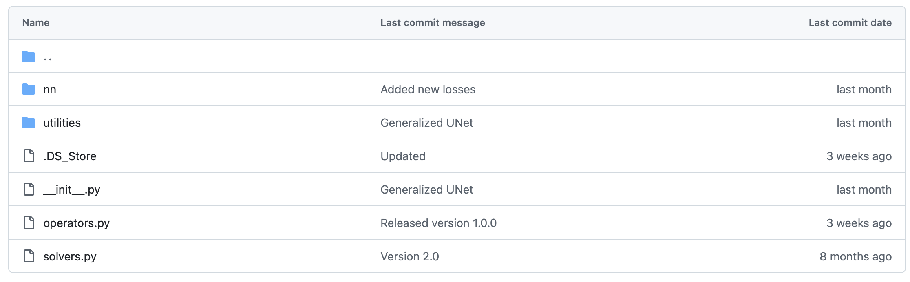

PyTorch, Automatic Differentiation, and Training Mechanics#
Computational Representation and Differentiation#
The previous notebook introduced the data side of the pipeline: how an inverse problem is translated into tensors, batches, normalization rules, and datasets. We may now focus on the next layer of the implementation, namely the tools that make it possible to define parameterized maps, compute gradients, and carry out optimization in practice.
In computational imaging, PyTorch is not important merely because it is popular. It is important because it provides a concrete framework in which forward operators, neural architectures, losses, and optimization algorithms can all be written inside one differentiable computational structure.
The goal of this chapter is therefore more specific than a general software tutorial. We want to understand how the mathematical objects of the course become executable objects: tensors become data containers, modules become parameterized maps, losses become scalar functionals, and backpropagation becomes a systematic implementation of the chain rule.
from pathlib import Path
import matplotlib.pyplot as plt
import numpy as np
import torch
from PIL import Image
image_path = Path('..') / 'imgs' / 'Mayo.png'
img = Image.open(image_path).convert('L').resize((256, 256))
array = np.asarray(img, dtype=np.float32) / 255.0
print('Loaded image:', image_path)
print('Image size:', img.size)
print('Array shape:', array.shape)
print('Intensity range:', float(array.min()), float(array.max()))
Loaded image: ..\imgs\Mayo.png
Image size: (256, 256)
Array shape: (256, 256)
Intensity range: 0.0 0.8627451062202454
Tensors as discrete objects.
In PyTorch [12], the basic object is the tensor. From a mathematical viewpoint, a tensor is simply a multidimensional array, but in practice it carries additional information:
shape, which tells us the dimensions;
data type, which determines numerical precision;
device, which tells us whether the tensor lives on CPU or GPU;
gradient tracking, which tells us whether derivatives with respect to that tensor must be recorded.
A grayscale image of size \(H \times W\) is represented as a tensor of shape \((H, W)\), but in a training pipeline it is almost always embedded in the standard format
where \(B\) is the batch size and \(C\) is the number of channels. For a single grayscale image we have \(B=1\), \(C=1\); for a batch of \(B\) RGB images, \(C=3\). In inverse problems, \(C\) can carry physical meaning: different MRI receiver coils, independent spectral bands in multispectral imaging, or the real and imaginary parts of a complex-valued field. Understanding this convention is not a PyTorch technicality: it is part of understanding how the data entering the network relate to the underlying physics.
Shape errors are among the most common mistakes when moving from equations to code. An operator that expects input of shape \((B,1,H,W)\) and receives \((B,H,W)\) will either fail silently or broadcast in an unintended way. Getting shapes right is the first step in getting the mathematics right.
x_hw = torch.tensor(array) # (H, W)
x_chw = x_hw.unsqueeze(0) # (C, H, W)
x_bchw = x_chw.unsqueeze(0) # (B, C, H, W)
print('Tensor with shape (H, W):', tuple(x_hw.shape))
print('Tensor with shape (C, H, W):', tuple(x_chw.shape))
print('Tensor with shape (B, C, H, W):', tuple(x_bchw.shape))
print('dtype:', x_bchw.dtype)
print('intensity range:', float(x_bchw.min()), float(x_bchw.max()))
Tensor with shape (H, W): (256, 256)
Tensor with shape (C, H, W): (1, 256, 256)
Tensor with shape (B, C, H, W): (1, 1, 256, 256)
dtype: torch.float32
intensity range: 0.0 0.8627451062202454
plt.figure(figsize=(5, 5))
plt.imshow(array, cmap='gray')
plt.title('Example grayscale image')
plt.axis('off')
plt.show()

import torch
image = torch.arange(16, dtype=torch.float32).reshape(1, 1, 4, 4)
batch = image.repeat(3, 1, 1, 1)
print('Single image shape:', image.shape)
print('Mini-batch shape:', batch.shape)
print('First image in the batch:')
print(batch[0, 0])
Single image shape: torch.Size([1, 1, 4, 4])
Mini-batch shape: torch.Size([3, 1, 4, 4])
First image in the batch:
tensor([[ 0., 1., 2., 3.],
[ 4., 5., 6., 7.],
[ 8., 9., 10., 11.],
[12., 13., 14., 15.]])
Data type.
Data type describes how numbers are represented in memory, explicitly defining a trade-off between memory consumption and algorithmic precision. Numerically, any number \(a\) can be always represented as a triplet \((s, e, m)\), such that:
where \(s\) indicates the sign (i.e. whether the number is positive or negative), \(e\) is the exponent, and \(m\) is the mantissa. For example, the number \(a = 24\) can be written as \((0, 4, [0, 0, 0, 1, 1])\), so that:
Clearly, if we allocate more space for the exponent and the mantissa, we are able to represent larger numbers more precisely, but we also need more space to allocate each number.
In modern systems, there are 4 mainly-used number system representation:
float64: usually named double precision. It allocates a total of \(11\) (binary) digits to the exponent, \(52\) (binary) digits to the mantissa, and \(1\) (binary) digit for the sign. It is the most precise way of representing number, but is rarely used in AI due to the large amount of space required to represent each number (8 bytes per number).float32: usually named single precision. It is the defaultdtypefor pytorch tensors, as it only requires 4 bytes per number while keeping an high level of precision.float16: usually named half precision. It only requires 2 bytes per number, making it extremely efficient but also not really precise. It became popular recently as it is commonly used to implement very large models such as LLMs. It is of scarce use in imaging setup as they usually require more precision.bfloat16: a variant of the half precision representation, which allocates less digits to the exponent and more to the mantissa. The result is higher precision compared tofloat16, but at the same time more probability of overflow.

Parameters and modules.
A neural network is built by composing modules. Each module corresponds to a parameterized map. For example:
Linearimplements the linear transformation \(\boldsymbol{z} \mapsto W\boldsymbol{z}+\boldsymbol{b}\);Conv2dimplements a discrete convolution with learnable kernels (detail on convolution and convolutional neural networks will be given in the following sections);activation functions implement pointwise nonlinear maps;
normalization layers modify the statistics of intermediate features.
This correspondence between modules and mathematical operators should be taken literally. A Conv2d(1, 32, kernel_size=3) layer is not just “a convolution” in a generic sense. It defines 32 learned filters of size \(3\times3\), each a miniature discrete operator that detects a specific local pattern in the input. Stacking these layers builds a hierarchy of learned operators, from simple edge detectors to complex, task-specific feature extractors.
This viewpoint extends to physics-based operators. In this course the IPPy library wraps operators such as the CT projector or the image gradient as PyTorch modules, so that they can be composed with learned layers inside the same computational graph. A reconstruction network that starts with a physics-based backprojection step, followed by several learned convolutional layers, is simply a composition of modules, some of which with fixed, physics-derived weights, others with learned weights. Gradients flow through both without distinction.
Computational Graphs and Automatic Differentiation.
Suppose a scalar loss \(L(\boldsymbol{\Theta})\) is produced by a sequence of tensor operations. For example, if
where \(f_\Theta(\cdot)\) is defined as a PyTorch module, for example
While processing the computation of \(L(\boldsymbol{\Theta})\), PyTorch records the computational graph, a directed acyclic graph whose nodes are operations and whose edges carry the intermediate tensors. When needed, this computational graph allows us to compute
through automatic differentiation by traversing the graph in reverse.
From a mathematical point of view, this is simply the chain rule applied systematically. The importance of PyTorch is that it automates this process efficiently even when the network contains millions of parameters, and even when the computational graph mixes learned layers with arbitrary tensor operations.
For physics-based operators whose backward pass is not automatically derived, such as a CT projector implemented via a dedicated numerical library, PyTorch provides a mechanism to register a custom backward function. This is how IPPy implements the adjoint of the projector: the forward pass calls the projection code, and the registered backward pass calls its adjoint. From the rest of the computational graph, this operator is indistinguishable from a standard learned layer.
For example, this is how IPPy implements the computational graph for custom-defined operators:
class OperatorFunction(torch.autograd.Function):
@staticmethod
def forward(ctx, op, x):
"""Forward pass: applies op._matvec to each (c, h, w)"""
device = x.device
ctx.op = op # Store the operator for backward pass
# Initialize output tensor
batch_size = x.shape[0]
y = []
# Apply the operator to each sample in the batch (over the batch dimension)
for i in range(batch_size):
y_i = op._matvec(x[i].unsqueeze(0)) # Apply to each (c, h, w) tensor
y.append(y_i)
# Stack the results back into a batch
y = torch.cat(y, dim=0)
ctx.save_for_backward(x) # Save input for gradient computation
return y.to(device)
@staticmethod
def backward(ctx, grad_output):
"""Backward pass: applies op._adjoint to each (c, h, w)"""
op = ctx.op
device = grad_output.device
# Initialize gradient input tensor
batch_size = grad_output.shape[0]
grad_input = []
# Apply the adjoint operator to each element in the batch
for i in range(batch_size):
grad_i = op._adjoint(
grad_output[i].unsqueeze(0)
) # Apply adjoint to each (c, h, w)
grad_input.append(grad_i)
# Stack the gradients back into a batch
grad_input = torch.cat(grad_input, dim=0)
return None, grad_input.to(device) # No gradient for `op`, only `x`
Let’s see how to compute the gradient of a syntetic loss \(L(\Theta)\) using the computational graph in pytorch.
import torch
w = torch.tensor([2.0], requires_grad=True)
x = torch.tensor([3.0])
target = torch.tensor([1.0])
prediction = w * x
loss = torch.mean((prediction - target) ** 2)
loss.backward()
print('Prediction:', prediction.item())
print('Loss:', loss.item())
print('d loss / d w:', w.grad.item())
Prediction: 6.0
Loss: 25.0
d loss / d w: 30.0
Training Mechanics in Practice#

Losses and optimizers.
In code, a loss is a scalar tensor (i.e. a tensor of shaoe (1, 1, 1, 1)). Once it is computed, one calls .backward() to obtain all required parameter gradients. Then an optimizer updates the parameters.
For vanilla SGD, the mathematical update is
Adam [9] modifies this rule by rescaling and averaging gradients. It is useful for students to see that optimizer choice belongs to numerical optimization, not to model design.
To simplify the implementation, the optim submodule of pytorch contains a large choice of different pre-defined optimizers, such as SGD, Adam, AdamW, and others. Each optimizer takes as input the set of the parameters that needs to be optimized (parameters of a given Module are accessible using the .parameters() method), and a learning rate (representing the \(\eta\) term). Then, training proceeds as follows:
import torch
model = torch.nn.Linear(2, 1)
optimizer = torch.optim.SGD(model.parameters(), lr=0.1)
x = torch.tensor([[1.0, -1.0], [0.5, 0.5]])
y = torch.tensor([[2.0], [0.0]])
before = model.weight.detach().clone()
prediction = model(x)
loss = torch.mean((prediction - y) ** 2)
optimizer.zero_grad()
loss.backward()
optimizer.step()
after = model.weight.detach().clone()
print('Loss before the update:', loss.item())
print('Weights before the update:')
print(before)
print('Weights after one SGD step:')
print(after)
Loss before the update: 0.3992915153503418
Weights before the update:
tensor([[ 0.4697, -0.3481]])
Weights after one SGD step:
tensor([[ 0.4836, -0.4356]])
Learning rate scheduler:
Most of the time, setting a fixed, invariant learning rate is not a good practice, as it may lead to situation like that described in the figure: if \(\eta\) is chosen to be too high, the parameters may start bouncing back and forth around the minima, resulting in a model which does not improve its performance during training.
To avoid this kind of issues, in pytorch it is possible to define a learning rate schedule: a pre-defined function which allows for changing the value of the learning rate while training proceeds.
Inside its optim submodule, pytorch implements a lot of differet learning rate schedulers. Among those, the most representative are:
ReduceLROnPlateau: Reduce the learning rate by a pre-defined amount whenever the loss function stop decreasing.LinearLR: Linearly reduce the learning rate in the given domain.CosineAnnealingLR: The most common learning rate scheduler. It gradually reduce the learning rate to zero following a cosine transformation.

import matplotlib.pyplot as plt
import torch
num_iter = 100
model = torch.nn.Linear(2, 1)
optimizer = torch.optim.SGD(model.parameters(), lr=0.1)
scheduler = torch.optim.lr_scheduler.CosineAnnealingLR(
optimizer=optimizer,
T_max=num_iter,
)
x = torch.tensor([[1.0, -1.0], [0.5, 0.5]])
y = torch.tensor([[2.0], [0.0]])
loss_val = []
lr_val = []
for k in range(num_iter):
prediction = model(x)
loss = torch.mean((prediction - y) ** 2)
optimizer.zero_grad()
loss.backward()
optimizer.step()
scheduler.step()
loss_val.append(loss.item())
lr_val.append(scheduler.get_last_lr()[0])
plt.figure(figsize=(14, 4))
plt.subplot(1, 2, 1)
plt.plot(loss_val)
plt.grid(alpha=0.3)
plt.title('Loss')
plt.xlabel('Iteration')
plt.subplot(1, 2, 2)
plt.plot(lr_val)
plt.grid(alpha=0.3)
plt.title('Learning rate')
plt.xlabel('Iteration')
plt.tight_layout()
plt.show()

From PyTorch to IPPy#
The previous examples explain how PyTorch represents tensors, modules, gradients, and optimization. In computational imaging, however, one often needs to include in the computational graph not only learned layers, but also the forward operator that models the data acquisition process.
IPPy is designed precisely for this purpose. It does not replace PyTorch: it extends it with imaging-oriented components that behave like ordinary differentiable modules inside the same computational graph. In particular:
operatorscontains forward models such as blurring, downscaling, gradient operators, and CT projectors;solverscontains classical reconstruction algorithms, useful as baselines or building blocks;nncontains neural architectures for inverse problems.
From the viewpoint of the present chapter, the key idea is simple: if a measurement model is written as
then IPPy provides an implementation of the operator \(K\) that can be composed with standard PyTorch networks. A trainable reconstruction map \(f_\Theta\) can then be fitted by minimizing a loss such as
while gradients still flow through the same .backward() mechanism introduced above.
{kind=link}

The point is not merely software convenience. Once the operator belongs to the computational graph, one can mix physics-based components and learned components without changing the mathematical logic of training.
import glob
import importlib.util
from pathlib import Path
import matplotlib.pyplot as plt
import torch
from PIL import Image
from torch import nn
from torch.utils.data import Dataset, DataLoader
from torchvision import transforms
here = Path.cwd().resolve()
for base in (here, here.parent):
if (base / 'IPPy').exists():
ippy_root = base / 'IPPy'
break
else:
raise FileNotFoundError('Could not locate the local IPPy package.')
operators_spec = importlib.util.spec_from_file_location('course_ippy_operators', ippy_root / 'operators.py')
operators = importlib.util.module_from_spec(operators_spec)
operators_spec.loader.exec_module(operators)
def get_device():
if torch.cuda.is_available():
return 'cuda'
try:
if torch.backends.mps.is_available():
return 'mps'
except AttributeError:
pass
return 'cpu'
def gaussian_noise(y, noise_level):
e = torch.randn_like(y, device=y.device)
return e / torch.norm(e) * torch.norm(y) * noise_level
class MayoDataset(Dataset):
def __init__(self, data_path, data_shape):
super().__init__()
self.data_path = data_path
self.data_shape = data_shape
self.fname_list = glob.glob(f'{data_path}/*/*.png')
def __len__(self):
return len(self.fname_list)
def __getitem__(self, idx):
img_path = self.fname_list[idx]
x = Image.open(img_path).convert('L')
x = transforms.Compose([
transforms.ToTensor(),
transforms.Resize(self.data_shape),
])(x)
return x
torch.manual_seed(0)
device = get_device()
train_dataset = MayoDataset(data_path='../Mayo/train', data_shape=256)
train_loader = DataLoader(train_dataset, batch_size=4, shuffle=True)
x_true = next(iter(train_loader))[0:1].to(device)
K = operators.Blurring(
img_shape=(256, 256),
kernel_type='motion',
kernel_size=9,
motion_angle=20,
)
with torch.no_grad():
y_clean = K(x_true)
y_delta = y_clean + gaussian_noise(y_clean, noise_level=0.01)
x_adjoint = K.T(y_delta)
fig, axes = plt.subplots(1, 3, figsize=(15, 5))
for ax, image, title in zip(
axes,
[x_true, y_delta, x_adjoint],
['Original image', 'Blurred measurement', 'Adjoint backprojection'],
):
ax.imshow(image.detach().cpu().squeeze(), cmap='gray')
ax.set_title(title)
ax.axis('off')
plt.tight_layout()
plt.show()
print('Working device:', device)
print('Measurement tensor shape:', tuple(y_delta.shape))
print('Training dataset size:', len(train_dataset))

Working device: cpu
Measurement tensor shape: (1, 1, 256, 256)
Training dataset size: 3306
A minimal deblurring experiment.
We now combine a fixed IPPy operator with a small convolutional network written in standard PyTorch. The operator produces motion-blurred measurements from the Mayo dataset, and the network learns to approximate the inverse map.
In this version, the training data are not synthetic patches extracted from a single image. Instead, we use the MayoDataset dataloader directly:
load clean training images \(\boldsymbol{x}\) from the dataset;
generate measurements through an
IPPyoperator \(K\);define a trainable model \(f_\Theta\) in PyTorch;
optimize \(\Theta\) by comparing \(f_\Theta(K\boldsymbol{x})\) with \(\boldsymbol{x}\).
This is the basic end-to-end paradigm that will reappear throughout the course.
from tqdm.auto import tqdm
test_dataset = MayoDataset(data_path='../Mayo/test', data_shape=256)
test_loader = DataLoader(test_dataset, batch_size=4, shuffle=False)
class SmallDeblurCNN(nn.Module):
def __init__(self):
super().__init__()
self.net = nn.Sequential(
nn.Conv2d(1, 16, kernel_size=3, padding=1),
nn.ReLU(),
nn.Conv2d(16, 16, kernel_size=3, padding=1),
nn.ReLU(),
nn.Conv2d(16, 1, kernel_size=3, padding=1),
nn.Sigmoid(),
)
def forward(self, x):
return self.net(x)
model = SmallDeblurCNN().to(device)
optimizer = torch.optim.Adam(model.parameters(), lr=1e-3)
loss_fn = nn.MSELoss()
num_epochs = 3
noise_level = 0.01
history = []
for epoch in range(num_epochs):
model.train()
epoch_loss = 0.0
progress_bar = tqdm(train_loader, desc=f'Epoch {epoch + 1}/{num_epochs}', leave=True)
for step, x_batch in enumerate(progress_bar, start=1):
x_batch = x_batch.to(device)
with torch.no_grad():
y_batch = K(x_batch)
y_batch = y_batch + gaussian_noise(y_batch, noise_level=noise_level)
prediction = model(y_batch)
loss = loss_fn(prediction, x_batch)
optimizer.zero_grad()
loss.backward()
optimizer.step()
epoch_loss += loss.item()
progress_bar.set_postfix(batch_loss=f'{loss.item():.6f}', avg_loss=f'{epoch_loss / step:.6f}')
history.append(epoch_loss / len(train_loader))
print(f'Epoch {epoch + 1}: training loss = {history[-1]:.6f}')
c:\Users\tivog\anaconda3\envs\nn\lib\site-packages\tqdm\auto.py:21: TqdmWarning: IProgress not found. Please update jupyter and ipywidgets. See https://ipywidgets.readthedocs.io/en/stable/user_install.html
from .autonotebook import tqdm as notebook_tqdm
Epoch 1/3: 100%|██████████| 827/827 [02:13<00:00, 6.20it/s, avg_loss=0.004248, batch_loss=0.000987]
Epoch 1: training loss = 0.004248
Epoch 2/3: 100%|██████████| 827/827 [01:47<00:00, 7.71it/s, avg_loss=0.001097, batch_loss=0.000911]
Epoch 2: training loss = 0.001097
Epoch 3/3: 100%|██████████| 827/827 [01:46<00:00, 7.74it/s, avg_loss=0.000892, batch_loss=0.000706]
Epoch 3: training loss = 0.000892
x_eval = next(iter(test_loader))[0:1].to(device)
with torch.no_grad():
y_eval = K(x_eval)
y_eval = y_eval + gaussian_noise(y_eval, noise_level=0.01)
x_pred = torch.clamp(model(y_eval), 0.0, 1.0)
x_eval_adjoint = K.T(y_eval)
fig, axes = plt.subplots(1, 4, figsize=(18, 5))
for ax, image, title in zip(
axes,
[x_eval, y_eval, x_eval_adjoint, x_pred],
['Original', 'Blurred input', 'Adjoint image', 'Network output'],
):
ax.imshow(image.detach().cpu().squeeze(), cmap='gray')
ax.set_title(title)
ax.axis('off')
plt.tight_layout()
plt.show()
plt.figure(figsize=(7, 4))
plt.plot(history, marker='o')
plt.grid(alpha=0.3)
plt.xlabel('Epoch')
plt.ylabel('Training loss')
plt.title('Quick deblurring demo with `IPPy` + PyTorch')
plt.show()


Why This Computational Viewpoint Matters for Imaging#
In computational imaging, implementation details can affect the mathematical model more than one might expect. Three examples are especially relevant.
Finite precision affects numerical stability. Standard single-precision float32 arithmetic can accumulate rounding errors across many layers. In ill-conditioned inverse problems, where small perturbations in the input can amplify enormously, this is not negligible, and the difference between float32 and float64 may be visible in the reconstructed image.
Normalization changes the scale and statistical properties of intermediate representations. Batch normalization normalizes using statistics computed across the current minibatch, which couples items that are processed together and introduces a dependency on batch composition. Layer normalization operates on each sample independently, making it better suited to settings where batch size is very small, which is common in imaging.
Data augmentation modifies the empirical distribution seen during training. A network trained on images that have been randomly flipped horizontally will implicitly learn a reconstruction rule that is invariant to left-right reflection. Whether this symmetry is physically appropriate depends entirely on the imaging geometry. Augmentation is not just a regularization trick; it is an implicit encoding of prior knowledge about the problem.
The computational realization of a model is therefore never neutral. Understanding PyTorch’s conventions is the most reliable way to ensure that what is implemented corresponds to what is intended mathematically. While finite number precision has been already briefly discussed in this section, we will deeper discuss normalization and data augmentation later during the course.
Exercises#
Create a tensor of shape
(4,1,32,32)and explain what each dimension means in an imaging pipeline.Write a minimal
Linearmodel and verify by hand one gradient that PyTorch computes automatically.Explain why minibatch optimization changes the numerical optimization problem even when the mathematical loss is unchanged. In particular, explain why minibatch SGD lead to a stochastic optimization procedure.
Give one example where a low-level implementation choice, such as padding or dtype, changes the actual model being trained.
In the deblurring demo above, identify which part of the pipeline is the forward model, which part is the trainable inverse map, and how gradients are propagated through the full computation.
Further Reading#
This chapter is intentionally brief. Its role is to make the later notebooks readable at the code level. For a thorough and practical introduction to deep learning with PyTorch, see [15]. The framework itself, including its design principles and performance characteristics, is described in [12]. For a more detailed discussion of the imaging-oriented components of the course codebase, see the dedicated notebook on IPPy in the end-to-end section.
Structured Exercise: Receptive Field and Pooling in Image Reconstruction#
Expected time: about 30 minutes.
The goal of this exercise is to understand, through a small PyTorch experiment, why the receptive field of a convolutional network matters in computational imaging. This idea will become important later, when deeper architectures and UNet-type models are introduced.
Consider the following setting. Start from a clean grayscale image \(\boldsymbol{x}\), create a blurred version \(\boldsymbol{y}=K\boldsymbol{x}\), and train a small CNN to predict \(\boldsymbol{x}\) from \(\boldsymbol{y}\). Compare two networks:
Model A: a shallow CNN with a few
Conv2dlayers and no pooling;Model B: a CNN that includes at least one downsampling step (for example
MaxPool2dor a stride-2 convolution) and one upsampling step.
The purpose is not to obtain the best reconstruction quality, but to observe how enlarging the effective receptive field changes the result.
Task 1: Build the dataset#
Use the ideas already shown in this notebook.
Start from one or more clean images available in the course material.
Build a small training subset with a dataloader, for example by selecting a limited number of Mayo images.
Corrupt them with a blur operator. You may use the
IPPyblurring operator or a standardConv2dwith fixed kernel.Keep a small validation set aside.
Task 2: Define two reconstruction models#
Implement two models in PyTorch.
Model Ashould only use local convolutions and pointwise nonlinearities.Model Bshould include one mechanism that enlarges the receptive field, such as pooling or strided convolution, followed by an upsampling step.Keep both models small enough that training runs quickly.
Task 3: Train both models#
Train the two networks on the same data.
Use the same loss function for both models, for example MSE.
Use the same optimizer and roughly the same number of training iterations.
Record the training loss, and if possible also the validation loss.
Task 4: Compare the outputs#
Pick one or two validation examples and display:
the clean image,
the blurred input,
the reconstruction produced by
Model A,the reconstruction produced by
Model B.
Then answer the following questions in a short paragraph:
Which model reconstructs large blurred structures more effectively?
What role does the receptive field appear to play?
What is the possible drawback of pooling in an imaging problem where fine spatial detail matters?
Deliverable#
Submit the following four items:
the code defining the two models;
one figure showing the training-loss curves;
one figure comparing the reconstructions on at least one validation example;
a short written discussion of about 8–10 lines explaining what you observed.
A complete deliverable should make it possible to verify both that the models were implemented correctly and that you understood the connection between receptive field, pooling, and image reconstruction.